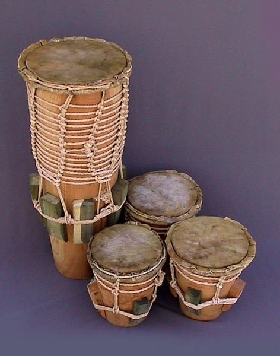
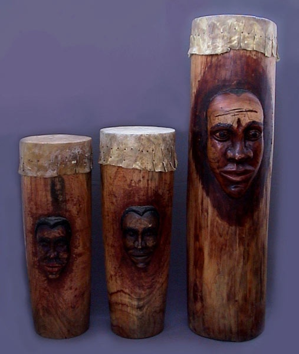

Atabaque
Копался в дебрях интернета и понял, что очень тяжело найти хоть какую-то интересную, достоверную и «полную» информацию про, можно сказать, „сердце капоэйры“ — атабаке. Что на русском, что на английском встречал либо короткие определения, либо сомнительные и пространные тексты (зачастую не имеющие под собой фактов). Поэтому решил написать «что-то» своё, «что-то» что ответило бы на мои вопросы. Отдельное спасибо TAMALUKU =)
Атабаке (Atabaque) — это бразильский одноголовый бочкообразный или конический барабан, регулировка натяжения мембраны которого осуществляется с помощью системы веревок и клиньев. Для игры атабакейру (atabaqueiro — игрок на атабаке) иногда использует только руки, иногда только палочки, а иногда и то и другое одновременно.
Это связано с афро-бразильской религией, соединяющая в себе христианство и африканские верования — кандомбле (candomble), в которой атабаке занимает особое место. Согласно верованиям многих народностей Банту (легших в основу кандобле) голос атабаке достигает мира “огун” (земли богов и предков) и позволяет общаться с оришами (orixas — божествами, духами природы). Причем, для каждого отдельного ориша (а их в кандомбле десятки) существует свой уникальный ритмический рисунок. Благодаря такому разнообразию ритмов многие музыкальные ансамбли (в особенности, группы босса новы (bossa novo) и карнавальные оркестры (blocos afros и afoxe)) на протяжении всего 20 века черпают вдохновение у атабакейру.
Атабаке, несомненно, имеет африканские корни и уходит в этнические группы народности банту. Из возможных прародителей следует выделить — bonkó enchemiyá и makuta.
- Bonkó enchemiyá — один из барабанов оркестра bianko. Представляет собой барабан в виде усеченного конуса, закрытого с широкой стороны кожей и открытого с другой. Натяжение мембраны осуществляется системой веревок и клиньев.- Makuta (yuka) — под этим названием объединены 3 барабана разной высоты (от большего к меньшему): kachimbo, mula, caja (nsumbi ngoma) — бочкообразный барабан, с одной стороны основание затянуто кожей, другое — открыто. Крепление мембраны осуществляется гвоздиками. Однако некоторые исследователи предполагают, что когда-то мембрана крепилась с помощью системы веревок.Однако сказать точнее кто был предком атабаке сложно (ввиду отсутствия какой-либо достоверной информации) и это, в принципе, не имеет особого значения, так как попав на территорию Бразилии конструкция африканских барабанов, состав аккомпанемента и манера игры изменились, объединив в себе традиции разных племен и народностей.
Не обошлось здесь и без португальского влияния: в ходе ассимиляции африканцев, название барабанов заменились на нечто более общее и широко распространенное в португалоговорящих странах — “atabaque”, означающее “барабан” (литавры и т.п.).
На самом деле, слово “atabaque” — арабского происхождения (по-арабски “at-tabaq" – «музыкальная тарелка»), оно проникло в португальский язык в период арабского завоевания (VII-IX века) и сохранилось с сотнями других арабизмов.
Окончательный вид атабаке приобрел в ходе эволюции кандомбле. В настоящее время, в зависимости от размера и назначения, различают 3 вида атабаке (от большего к меньшему): rum (run), rumpi, le (runle).
- Rum или run — самый большой басовый барабан. “Hun”, “ohun” с языка йоруба означает “голос”/”рев”. Этот барабан отвечает за музыкальное соло, вариации в мелодии. В кандомбле его назначение достичь “orun”, земель orixas (богов, духов) и предков, и призвать их.
- Rumpi — средний по размеру барабан. Его название также из языка йоруба и состоит из двух слов: “hun” — “голос”/”рев” и “pi” — “средний”/”промежуточный”, что указывает на его положение в оркестре и в музыкальном исполнении. Задача rumpi поддерживать основной ритм.
- Le — самый маленький из 3х атабаков. Название его происходит от языка народа эве и означает “маленький”. Задача le, как и rumpi поддерживать основной ритм.
Первоначально атабаке был сугубо религиозным атрибутом, одним из символов кандомбле, однако со временем он вышел за пределы святилища (terreiro) и проник, впитался в другие бразильские субкультуры: капоэйру (capoeira), макулеле (maculele), карнавальные ансамбли (bloco afro и afoxe), самба ди рода (samba de roda), боса нову (bossa novo) и т.д.
Георгий Хохлов ©